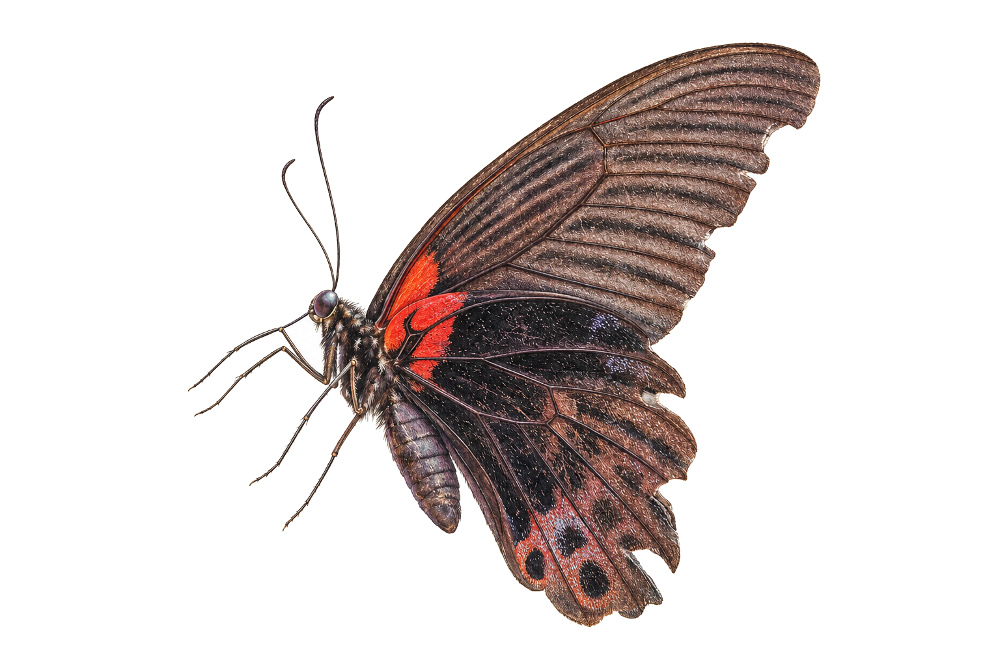

アゲハチョウ科 · 007 / 165
ナガサキアゲハ
Papilio agenor

特徴・見分け方
大型の黒いアゲハ。沖縄で見られる個体は通常、尾状突起を欠く。雌は白い模様が発達することがある。
雌雄の違い
雄はほぼ黒色。雌では前翅基部の赤色や後翅の白い斑紋が目立つ。
大きさ
前翅長 60–80 mm（一般的な目安。沖縄個体群だけの実測範囲ではない）
沖縄の島別記録
伊是名島、伊平屋島、水納島（本部町）、瀬底島、伊江島、古宇利島、大宜味村（宮城島）、屋我地島、奥武島（名護市）、沖縄本島、伊計島、浜比嘉島、宮城島（うるま市）、平安座島、薮地島、津堅島、久高島、奥武島（南城市）、渡嘉敷島、座間味島、阿嘉島、慶留間島、外地島、粟国島、渡名喜島、久米島、オーハ島、南大東島*、宮古島、来間島、石垣島、竹富島、西表島、波照間島、与那国島。 記録島のすべてで同じ頻度とは限らない。
生息環境
平地の庭、集落、果樹園。
生態・識別上の補足
雌雄で外見が大きく異なる。種全体には有尾型もあるため「必ず尾がない」とは言えない。 近年の分類では日本産をP. agenorとし、従来のP. memnonから分ける扱いがある。本記事はP. agenorを採用。
幼虫・食草
ザボン、ミカン、シークヮーサーなどミカン科。
参照元・参考資料
- 沖縄蝶類生態図鑑：ナガサキアゲハ
資料内の参照日: 2026-11-10 - 形態・大きさの補足資料
資料内の参照日: 2026-11-10
掲載内容は提供データ（2026年11月10日更新）に基づきます。記録島は現在の定着や観察の容易さを保証しません。イラストは参考表現で、同定には実物の形態と参照資料を併せて確認してください。